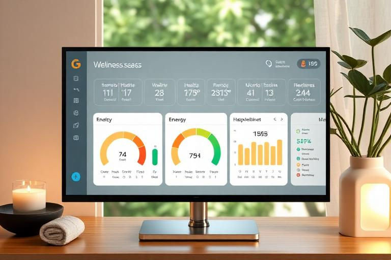

New player guide
Getting Started in RockMundo
RockMundo is a persistent music world. You are not trying to finish a short campaign; you are building a career, relationships, songs, reputation and stories over time. Your first objective is therefore not to optimise everything—it is to establish a character who can keep progressing while you discover which parts of the world you enjoy.

In brief
A good first phase is to learn the schedule, develop a small set of relevant skills, keep your character in reasonable condition, create or learn some music, build enough income to support your plans, and start taking low-risk opportunities such as practice, open mics, rehearsals or early gigs.
Your first decisions
You can eventually branch into many areas, so early decisions should create options rather than trap you in a narrow path.
Pick a musical direction
Choose an instrument, vocal path or another musical role that you actually want to use. Relevant skills become more useful when they support the activities you regularly perform.
Decide how social you want to be
You can pursue music alone, join a band, form one with other players, collaborate on songs or build a wider social career. A band opens powerful shared systems but also requires coordination.
Protect your cashflow
Studios, travel, equipment and promotion can all cost money. Do not spend every early dollar on a single upgrade if that leaves you unable to take opportunities.
Use your schedule deliberately
Activities occupy real game time. Before booking something, check what else is planned and whether you need to be in a different city later.
A useful early-game loop
- Check today and the next few days. Look for scheduled activities, travel, gigs, rehearsals, offers and anything that could conflict.
- Improve something relevant. Practice, education and other development systems help you build the capabilities behind future activities.
- Advance your music. Write a song, work on familiarity, rehearse repertoire, record something when ready, or prepare a setlist.
- Do something public. When appropriate, perform, promote, post, collaborate or engage with systems that can grow your reputation and audience.
- Review money and condition. Progress is easier when you are not constantly recovering from avoidable financial or wellness problems.
Skills: specialise, but not blindly
The skill tree supports different musical and career identities. Early on, concentrate on capabilities that feed the actions you actually want to perform rather than spreading progress across everything simply because it is available.

As you understand the game, secondary skills can make your character more versatile. A performer may care about songwriting, stage performance and instrument mastery; another player might lean toward production, media, business or another career path.
Wellness and time are resources too
Your character is not just a stack of skill points. Condition and lifestyle systems are designed to make sustained careers feel different from endlessly chaining activities with no consequences.

Good first goals
- Understand how the schedule and activity booking system works.
- Choose a core musical role and begin developing the relevant skills.
- Create, obtain or learn enough songs to start building a repertoire.
- Try an early performance route such as busking, an open mic or an appropriately sized gig when available.
- Explore bands and recruitment even if you are not ready to join one yet.
- Learn how travel interacts with upcoming commitments.
- Keep enough cash available that one purchase does not stop the rest of your career.